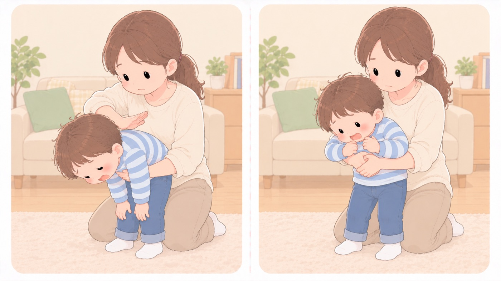

のどに詰まったとき（1歳以上）
1歳以上は背部叩打法と腹部突き上げ法を5回程度ずつ。1歳未満の胸部突き上げ法とは違う
手順は1歳未満と1歳以上で違います。1歳以上では、背中を叩く背部叩打法赤ちゃんをうつぶせに乗せて頭を低くし、背中の真ん中を手のひらの付け根で続けて叩き、詰まったものを出す方法。と、みぞおちの下を圧迫する腹部突き上げ法後ろから抱えて、みぞおちの下を手前上方へ突き上げる方法。1歳以上で使い、1歳未満には行わない。を使います。0〜3か月タブに載せた胸部突き上げ法赤ちゃんをあおむけに乗せて頭を低くし、胸の中央を指2本で押し込み、詰まったものを出す方法。1歳未満で使う。は、1歳未満のための方法なので、この年齢にそのまま当てないでください。

まず大声で助けを呼び、119番を頼む
そばに人がいれば119番通報を頼み、自分はすぐに処置を始めます。一人で、ほかに頼める人がいないときは、119番より先に異物除去を始めます。
背部叩打法から始める
1歳以上ではまず背部叩打法赤ちゃんをうつぶせに乗せて頭を低くし、背中の真ん中を手のひらの付け根で続けて叩き、詰まったものを出す方法。を行います。頭を低くした姿勢にして、左右の肩甲骨のあいだを手のひらの付け根で5回程度叩きます。
取れなければ腹部突き上げ法
背部叩打法赤ちゃんをうつぶせに乗せて頭を低くし、背中の真ん中を手のひらの付け根で続けて叩き、詰まったものを出す方法。で異物が除去できなかった場合に行います。後ろから抱えるように腕を回し、みぞおちの下で手を組んで、手前上方に向かって5回程度圧迫します。
取れるまで交互に繰り返す
異物が取れるか、反応がなくなるまで、5回程度ずつ繰り返して続けます。
反応がなくなったら心肺蘇生
ただちに心肺蘇生に切り替えます。119番がまだなら、このときに通報します。
- すること：背部叩打法を先に、取れなければ腹部突き上げ法
消防庁と消費者庁が示している順番です。いきなり腹部突き上げ法後ろから抱えて、みぞおちの下を手前上方へ突き上げる方法。1歳以上で使い、1歳未満には行わない。から始めません。どちらも5回程度をひと組として、交互に繰り返します。 - しないこと：腹部突き上げ法を、1歳未満の子に行わない
1歳未満では胸部突き上げ法赤ちゃんをあおむけに乗せて頭を低くし、胸の中央を指2本で押し込み、詰まったものを出す方法。1歳未満で使う。を使います。腹部の圧迫は、内臓を傷めるおそれがあります。 - しないこと：口の中を指でかき回さない
見えない異物を探ると、かえって奥へ押し込みます。 - すること：腹部突き上げ法を行ったら、必ず受診する
異物が取れても、内臓を傷めていることがあります。そのまま様子を見ません。 - すること：手順を紙にして、台所とダイニングに貼っておく
詰まらせるのは食事中です。調べている時間はありません。
迷ったときの相談先
受診すべきか迷うときの窓口です。番号は、今のうちに電話帳に入れておきます。
- 子ども医療電話相談「#8000」（厚生労働省）： 夜間・休日に、小児科医師・看護師へ電話で相談できます。実施時間帯は都道府県によって違います。
- 中毒110番（日本中毒情報センター）： 大阪 072-727-2499（24時間）、つくば 029-852-9999（9〜21時）。
- 全国版救急受診アプリ「Q助」（総務省消防庁）： 症状を選んでいくと、救急車を呼ぶべきかの目安が出ます。
意識がない、呼吸がおかしい、顔色が青白い、けいれんしているときは、 相談ではなく119番です。
🛍 グッズの選び方
PR- 手順は紙に印刷して、食卓から見える場所に貼っておきます。詰まらせるのは食事中です。
- 救急セットは、中身を一度開けて確認しておきます。使い方を知らないものが入っていても役に立ちません。
- 体温計は、受診の判断に必要になります。
- 救急セット 16点（ファーストエイド）16点。1か所にまとめておけるAmazonで見る →（新しいタブで開きます）
- オムロン 電子体温計 けんおんくん MC-688（15秒予測）15秒で測れる。嫌がる前に終わるAmazonで見る →（新しいタブで開きます）
- 誤飲チェッカー39mmの円筒。詰まる大きさをその場で測れるAmazonで見る →（新しいタブで開きます）
- テルモ 電子体温計 C232P ET-C232P01テルモの定番。表示が大きいAmazonで見る →（新しいタブで開きます）
- アイリスオーヤマ 脇下体温計 DT-701（医療機器認証・10秒測定）10秒。嫌がる子でも測り切れるAmazonで見る →（新しいタブで開きます）
リンクはAmazonアソシエイトリンクです。当サイトはアフィリエイトプログラムに参加しています。Amazonのアソシエイトとして、当サイトは適格販売により収入を得ています。 選び方の方針
この項目の根拠
- 「救急蘇生法の指針2025（市民用）」への対応について（令和8年10月23日・消防救第385号・総務省消防庁・PDF）（新しいタブで開きます）
気道異物除去における背部叩打・腹部突き上げ・胸部突き上げは、それぞれ5回程度繰り返すこととされたこと。反応がある場合はまず大声で助けを呼び、直ちに119番通報を誰かに依頼した後に、背部叩打法を5回程度試みて効果がなければ腹部突き上げ法を5回程度試み、異物が除去できるか反応がなくなるまで繰り返すこと。救助者が一人で119番通報を他の人に依頼できなければ、119番通報より異物除去の対応を優先すること。反応がなくなった場合は心肺蘇生を開始し、まだ119番通報されていなければ直ちに通報すること。途中で異物が見えた場合は取り除くが、見えない場合はやみくもに口の中に指を入れて探らないこと。 - 子どもを事故から守る！事故防止ハンドブック（消費者庁・PDF）（新しいタブで開きます）
のどに食品が詰まったときは119番通報を誰かに頼み、1歳以上の幼児にはまず「背部叩打法」を行い、異物が除去できなかった場合は「腹部突き上げ法」を行うこと。1歳未満の乳児には背部叩打法と胸部突き上げ法を交互に行うこと。子ども医療電話相談「#8000」、日本中毒情報センターの中毒110番（大阪072-727-2499は24時間、つくば029-852-9999は9〜21時）、全国版救急受診アプリ「Q助」という相談先。 - 食品による子どもの窒息・誤嚥(ごえん)事故に注意!―気管支炎や肺炎を起こすおそれも、硬い豆やナッツ類等は5歳以下の子どもには食べさせないで―（消費者庁）（新しいタブで開きます）
硬い豆やナッツ類等は5歳以下の子どもには食べさせないこと。ミニトマトやブドウ等の球状の食品は4等分する、調理して軟らかくすること。